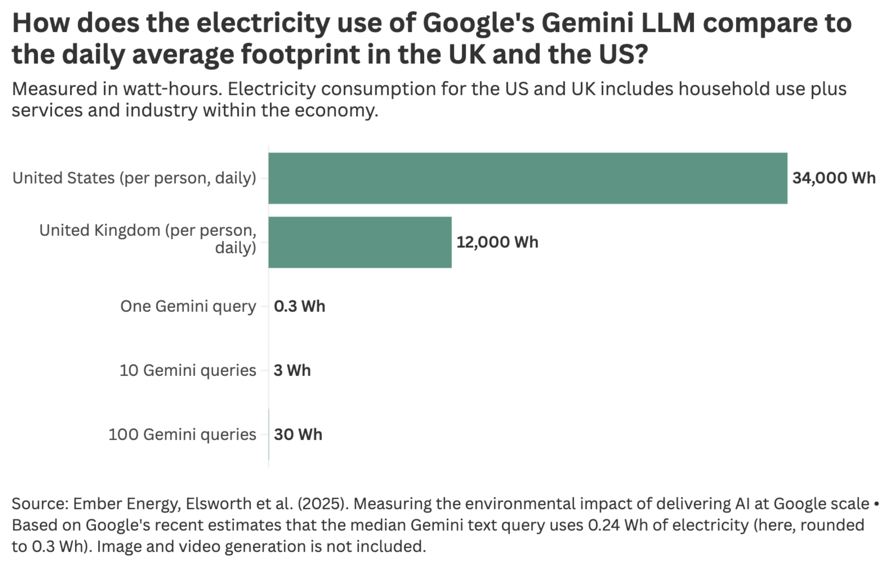
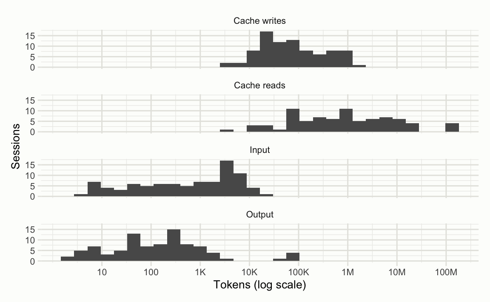
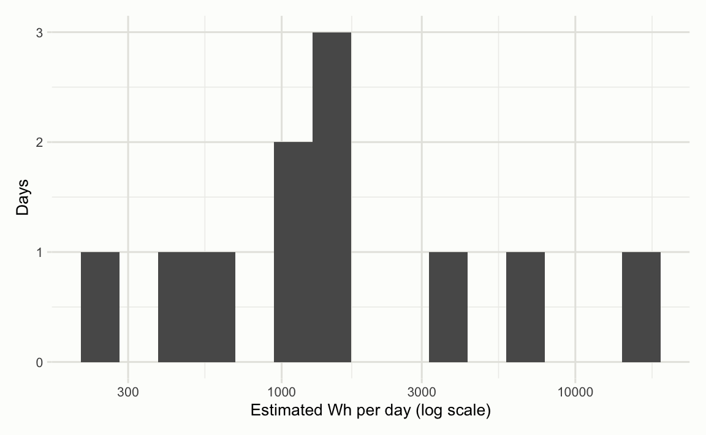
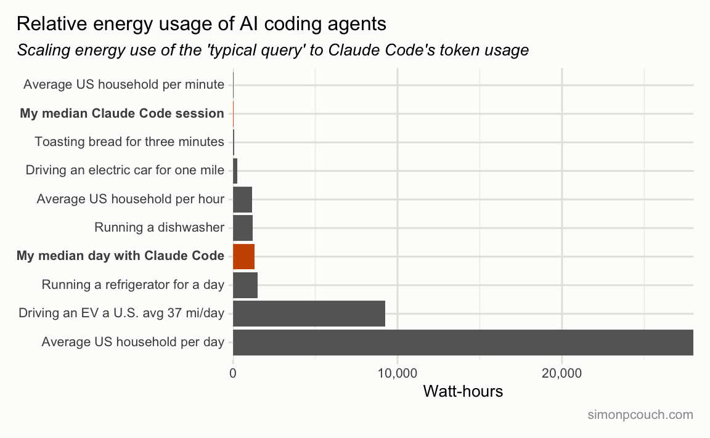

Throughout 2025, we got better estimates of electricity and water use of AI chatbots. There are all sorts of posts I could cite on this topic, but a favorite is this blog post from Our World in Data’s Hannah Ritchie. On the electricity front:

In short, “unless you’re an extreme power user, asking AI questions every day is still a rounding error on your total electricity footprint.”
A similar story applies to water usage. This one from Benjamin Todd:
The average American uses 1600 liters of water per day, so even if you make 100 prompts per day, at 2ml per prompt, that’s only 0.01% of your total water consumption. Using a shower for one second would use far more.
Generally, these analyses guide my own thinking about the environmental impacts of my individual usage of LLMs; if I’m interested in reducing my personal carbon footprint, I’m much better off driving a couple miles less a week or avoiding one flight each year. This is indeed the right conclusion for users of chat interfaces like chatgpt.com or claude.ai.
That said, 1 or 10 or 100 median prompts a day is many orders of magnitude off from my own personal use of LLMs; I likely am, in Hannah Ritchie’s words, an “extreme power user.” I work in software and spend much of my workday driving 2 or 3 coding agents, like Claude Code, at a time. Thus, a much more relevant question for me is how much energy does a typical Claude Code session consume? (I’m not going to dicuss water use in this post.)
tl;dr, much more:
There are so many considerations and assumptions and pieces of shorthand one must use along the way to answer this sort of question. I’ll do my best to call those out throughout this post, but please do understand this is still just Sunday afternoon napkin math from Some Guy.
Coding agents and the ‘median query’
Note
tl;dr: In this section, I point out that a Claude Code session should use orders of magnitude more energy than a ‘median query.’
The Gemini paper, Sam Altman blog post, and Epoch AI analysis of ChatGPT 4o that Hannah Ritchie cites all refer to something like a “median query” or “typical prompt.” Those various sources all ballpark the electricity usage of such a prompt around 0.3 Wh—0.24, 0.34, and 0.3, respectively. What is a median query?
From the Gemini team:
To calculate the energy consumption for the median Gemini Apps text prompt on a given day, we first determine the average energy/prompt for each model, and then rank these models by their energy/prompt values. We then construct a cumulative distribution of text prompts along this energy-ranked list to identify the model that serves the 50-th percentile prompt.
So, they took the 50th percentile to get the median. Yup. From Sam Altman, no details at all.1
What does the Gemini team’s paper and Sam Altman blog post–the two sources (hypothetically) with access to the real data–have in common? Very little detail. “Median” is doing a lot of work here. How many input tokens? Are we counting the system prompt? The core system prompt? How many output tokens? Which model? Does this include systems like Web Search or Deep Research? Is this Web-only, API-only, both? To give a number like 0.24 Wh or 0.34 Wh and no other details on the factors that lead to that number feels like a deliberate attempt to “have given an answer” while answering as little as possible of the actual question.
I’m ranting.
Anyways, here’s an example impression of a “median query”:
USER: Tell me a joke about statisticians
ASSISTANT: A statistician is someone who, when their head is in the oven and their feet are in the freezer, says “on average, I feel fine.”
The user types something, the model responds. Presumably, the system prompt under the hood, on the order of thousands of tokens, is cached and is included in this “median query.”
How is Claude Code different from this?
First, there’s the system prompt and descriptions of the tools that are available to Claude Code. In response to /context in Claude Code just now, this is what I see:
⛀ ⛁ ⛁ ⛁ ⛁ ⛁ System prompt:
3.1k tokens (1.6%)⛁ ⛁ ⛁ ⛁ ⛶ ⛁ System tools:
16.4k tokens (8.2%)
So, before the user even types a query, our context length is almost 20,000 tokens. These are presumably also cached/prefilled on Anthropic’s end.
Then, there’s also user-defined tools and prompts. I have 5 tools registered via the Model Context Protocol, in addition to ~200 tokens in my CLAUDE.md. Those 5 tools’ tool descriptions also consume a couple thousand tokens:
⛶ ⛶ ⛶ ⛶ ⛶ ⛁ MCP tools: 2.6k tokens (1.3%)
Okay, you get it–with Claude Code, by the time we’re kicking off the first request, we’re looking at a relatively long query.
Now, how does Claude Code do stuff? It calls tools. For example, if I say “Familiarize yourself, please!”, that message gets sent to Anthropic’s API, along with the system prompt and all of the tool descriptions, and then the model will say “Yes okay I’ll do that” and call a couple tools to gather information:
❯ Familiarize yourself, please!
⏺ I’ll take a look at the project structure to get oriented.
⏺ Bash(ls -la /Users/simoncouch/Documents/rrr/website)
⏺ Search(pattern: “**/*.qmd”)
In reply, my laptop will automatically process the requests and send this message back on my behalf with the tool call results:
⏺ Bash(ls -la /Users/simoncouch/Documents/rrr/website)
⎿ total 240
drwx——@ 3 simoncouch staff 96 Nov 11 13:59
_extensions
… +60 lines (ctrl+o to expand)⏺ Search(pattern: “**/*.qmd”)
⎿ Found 35 files (ctrl+o to expand)
The model will then see those results (in addition to my first message and the system prompt and the tool descriptions) and then kick off another couple tool requests. Those requests will return results, which is another user message (and all of the conversation history), and so on, until the model believes it has seen enough of the repository and gives me a summary of what it found. So, in sending one message, I’ve actually kicked off a series of 5 or 10 very large queries.
Whenever I read ‘median query’, I think about this. In my sessions with Claude Code, I’m sending maybe a dozen messages, and each of those messages are accompanied by maybe 5 tool calls (which are also queries that require just as much compute as a query that I type in myself), and all of those messages are super long. It seems that a Claude Code session should be orders of magnitude more compute-intensive than a ‘median query.’
To try and estimate the energy cost of a Claude Code session, I need to somehow scale the watt-hour figure for the median query to the scale of a Claude Code session’s hundreds of longer-than-median queries. I can attempt this by first scaling back, estimating the energy consumption per-token for the various kinds of tokens involved. Then, I’ll analyze my real Claude Code session data (which has the real token usage for each type of tokens) and scale those per-token figures up to coding agent scale.
Estimating electricity per token
From Claude Code, I have a bunch of data on millions of input, cached input, and output tokens. I want to “scale” those median query estimates to how many tokens I actually consume using the tool. To do so, we’ll use a blog post from Epoch AI and Anthropic’s API pricing data to put together a guess.
Here’s the graph:

Here’s Anthropic’s pricing data, priced per million tokens (MTok):
| Model | Base Input | Cache Reads | Output | Output/Input Ratio |
|---|---|---|---|---|
| Opus 4.5 | $5/MTok | $0.50/MTok | $25/MTok | 5:1 |
| Sonnet 4.5 | $3/MTok | $0.30/MTok | $15/MTok | 5:1 |
| Haiku 4.5 | $1/MTok | $0.10/MTok | $5/MTok | 5:1 |
Let’s focus on the medium context length case from Epoch AI, at 7,500 input words, which is something like half the full Claude Code system prompt and tool descriptions. They estimate that a long query to ChatGPT 4o (~7,500 words, or ~10,000 tokens at .75 words per token) with typical output length (400 words, or ~530 tokens) consumes 2.5 Wh. So, blending input and output tokens, that’s 10,530 tokens, or 0.01053 MTok. 2.5 Wh / 0.01053 MTok is ~240 Wh/MTok, blended.
Note
These estimates are for GPT-4o. In the last month, most all of my Claude Code usage has used Opus 4.5, Anthropic’s largest (and presumably most energy-intensive) model. At launch, GPT-4o was priced at $5 MTok input, $15 MTok output. Opus 4.5 is $5 and $25, respectively. Opus is likely a larger model, but also likely served much more efficiently than was possible in May 2024. I’m going to assume they’re in a ballpark of each other in terms of energy consumption per token.
Now, we actually want to split that up into Wh/MTok for input tokens and output tokens individually. Anthropic’s API prices output tokens at 5x the cost of input tokens. The assumption I’m going to make here is that energy usage for different kinds of tokens can be reasonably estimated by scaling according to the billing rates of those tokens.2 We have (input_tokens × input_rate) + (output_tokens × output_rate) = total_Wh and output_rate = 5 × input_rate, and can substitute the second into the first to get:
input_rate = 2.5 / (0.01 + 5 × 0.00053)
input_rate = 2.5 / (0.01 + 0.00265)
input_rate = 2.5 / 0.01265
input_rate ≈ 198 Wh/MTokSo, ~200 Wh/MTok for input, ~990 Wh/MTok for output.
Doing that for the short and maximum context cases, we get:
| Query type | Input tokens | Output tokens | Total Wh | Blended Wh/MTok | Back-solved input Wh/MTok (5× assumption) | Back-solved output Wh/MTok (5× assumption) |
|---|---|---|---|---|---|---|
| Typical short | ~130 | ~530 | 0.3 | ~450 | ~110 | ~540 |
| Medium context | ~10,000 | ~530 | 2.5 | ~240 | ~200 | ~990 |
| “Maximum” context | ~100,000 | ~530 | 40 | ~400 | ~390 | ~1950 |
Now, note that it doesn’t make sense for the output-vs-input energy ratio to be constant across input lengths. Generating output tokens does get more expensive as the context grows (roughly proportional to context length per output token), but processing the prompt grows more steeply (roughly quadratic in context length). That means the “true” output/input Wh-per-token ratio should shrink as inputs get longer. This is our 5x assumption, based on Anthropic’s pricing, at work.
For the purposes of this post, I’ll use the figures from the 100,000 “maximum”–Claude Sonnet and Opus 4.5 both have context windows of 200,000 tokens, and I run up against them regularly–to generate pessimistic estimates. So, ~390 Wh/MTok input, ~1950 Wh/MTok output.
Now, a large portion of the tokens consumed with Claude Code are cache hits and refreshes, which Anthropic prices at 1/10th the cost of input tokens. So, we’ll ballpark cached inputs at ~39 Wh/MTok. Same napkin math for cache writes; they price cache writes at a 25% premium to input tokens, so ~490 Wh/MTok. I have no idea if these are reasonable guesses.
My Claude Code data
Claude Code stores session logs in ~/.claude/projects/, with each session saved as a JSONL file containing usage data for every API call. Each log entry includes input_tokens, output_tokens, cache_creation_input_tokens, cache_read_input_tokens, and a requestId identifying the HTTP request. Multiple streaming events are logged per request with identical token counts, so we deduplicate by requestId.
library(tidyverse)
usage_raw <- read_csv("sessions/calls.csv", show_col_types = FALSE)
usage <-
usage_raw |>
distinct(request_id, .keep_all = TRUE)
glimpse(sample_n(usage, nrow(usage)))Rows: 8,825
Columns: 10
$ project <chr> "-Users-simoncouch-Documents-rrr-hypot…
$ session_id <chr> "f50ac864-06c2-4d94-907b-f5bd447f9312"…
$ request_id <chr> "req_011CX5WSCwYKkpgtw15qcjW5", "req_0…
$ timestamp <dttm> 2026-01-13 14:08:09, 2026-01-09 19:06…
$ model <chr> "claude-opus-4-5-20251101", "claude-op…
$ input_tokens <dbl> 1, 8, 1, 1, 1979, 8, 1, 8, 1, 8, 1, 1,…
$ output_tokens <dbl> 89, 1, 24, 24, 2, 3, 90, 3, 84, 1, 88,…
$ cache_creation_tokens <dbl> 147, 1022, 148, 146, 0, 368, 148, 3586…
$ cache_read_tokens <dbl> 36851, 104199, 173604, 33251, 0, 72682…
$ cost_usd <dbl> 0, 0, 0, 0, 0, 0, 0, 0, 0, 0, 0, 0, 0,…Plotting the distributions of each token type per session:

The median session had 24 requests and consumed 592,439 total tokens—5 user messages and 19 tool call responses. Applying our napkin math energy estimates:
wh_per_mtok <- c(
input = 390,
output = 1950,
cache_creation = 490,
cache_read = 39
)
median_energy_wh <-
median_session$input_tokens * wh_per_mtok[["input"]] / 1e6 +
median_session$output_tokens * wh_per_mtok[["output"]] / 1e6 +
median_session$cache_creation_tokens * wh_per_mtok[["cache_creation"]] / 1e6 +
median_session$cache_read_tokens * wh_per_mtok[["cache_read"]] / 1e6My estimate is that my median Claude Code session consumes 41 Wh, 138x more than the “typical query.”
In the course of a typical day at work, I’m usually programming for a few hours, and driving 2 or 3 Claude Code instances at a time throughout those hours. What’s the distribution of my energy usage daily?

On a median day, I estimate I consume 1,300 Wh through Claude Code—4,400 “typical queries” worth. (For those wondering, this is $15-20 of token spend on a typical day.)
In context
So, compared to a “typical query” of 0.3 Wh, my median Claude Code session is something like 41 Wh, and in a typical day of coding with Claude Code, I consume something like 1,300 Wh. How does this compare to other things I do every day?
Using the same data from Epoch AI:

It’s a bit unfair to show the “per-day” usage from Claude Code without the same time scale for other usages. Here’s a similar plot with a few more “per day” numbers included:

So, if I wanted to analogize the energy usage of my use of coding agents, it’s something like running the dishwasher an extra time each day, keeping an extra refrigerator, or skipping one drive to the grocery store in favor of biking there. To me, this is very different than, in Benjamin Todd’s words, “a terrible reason to avoid” this level of AI use. These are the sorts of things that would make me think twice.
There are a few very important caveats:
- This is all napkin math based on estimates from other researchers because the frontier labs don’t release comprehensive data. They ought to.
- The mix of energy sources that are used to power that compute largely determines how problematic this is. If that compute is largely driven by fossil fuels, that’s a problem, but if the compute is largely driven by renewables, I don’t mind much.3 Hank Green has a great video about this.
-
As Benjamin Todd puts it, “Cutting individual emissions is an inefficient way to fight climate change in the first place.” If we want to reduce the climate impact of our LLM usage, we are likely better off e.g. supporting advocacy for the green energy transition.
- I do have a weird relationship with this point specifically, as I write software that makes it easier for other people to use LLMs and I give talks about it and write blog posts about it and stuff. For most readers of this post, though, this likely doesn’t apply.
Personally, I don’t know that this scale of energy (and, ostensibly, water) use is significant enough to make me decrease my use of coding agents.4 That said, it is significant enough to make me donate to organizations that are working to accelerate the green energy transition, especially related to AI, like ClimateAction.tech, Green Web Foundation, Clean Grid Alliance, Sierra Club, Natural Resources Defense Council (NRDC), Earthjustice, RMI (Rocky Mountain Institute), 350.org, and Clean Energy States Alliance.
Appendix: Cost gut-check
Just to confirm that my parsing of the Claude session logs was reasonable, I decided to also estimate the dollar cost from our token data and compare the results to what ccusage reports.
pricing <- tribble(
~model, ~input, ~output,
"claude-opus-4-5-20251101", 5, 25,
"claude-sonnet-4-5-20250929", 3, 15,
"claude-haiku-4-5-20251001", 1, 5
) |>
mutate(
cache_creation = input * 1.25,
cache_read = input * 0.10
)
estimated_cost <-
usage |>
filter(as_date(timestamp) >= "2025-12-19") |>
left_join(pricing, by = "model") |>
summarize(
cost_usd = sum(
input_tokens * input / 1e6 +
output_tokens * output / 1e6 +
cache_creation_tokens * cache_creation / 1e6 +
cache_read_tokens * cache_read / 1e6,
na.rm = TRUE
)
)
estimated_cost# A tibble: 1 × 1
cost_usd
<dbl>
1 481.I estimate the cost over the last month at $480.64, within a dollar of what ccusage reported. Close enough for me.
Footnotes
From Epoch AI, they assume 500 output tokens and <100 input tokens and say everything else out loud, too. Thank you, Josh You.↩︎
This is pretty silly. For one, the “true” ratio of energy consumption for output vs. input tokens does not actually exist, as the former grows linearly while the latter has quadratic growth relative to the context length. Also, the ratios in each company’s pricing are a reflection of business strategy rather than the true ratios. An analysis of data from SemiAnalysis estimated that, at the few-thousand-tokens scale, output tokens are ~15x more compute-intensive than input. This makes me think that, at the tens-of-thousands scale, 5x is reasonable.↩︎
I especially don’t care about this energy usage if it is both driven by renewables and by on-premises power rather than drawn exclusively from the local grid, where improvements to infrastructure are much more often funded by local residents than the AI companies.↩︎
For many, the size of the bill you’ll get from the Anthropic platform for exceeding a Max plan’s usage is probably a stronger mediator than these figures.↩︎